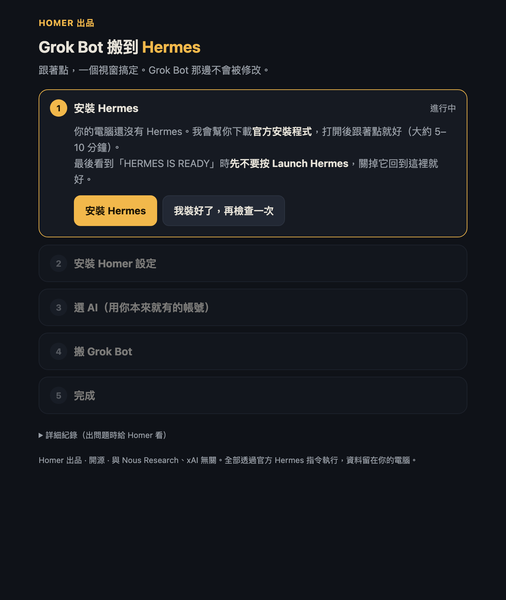
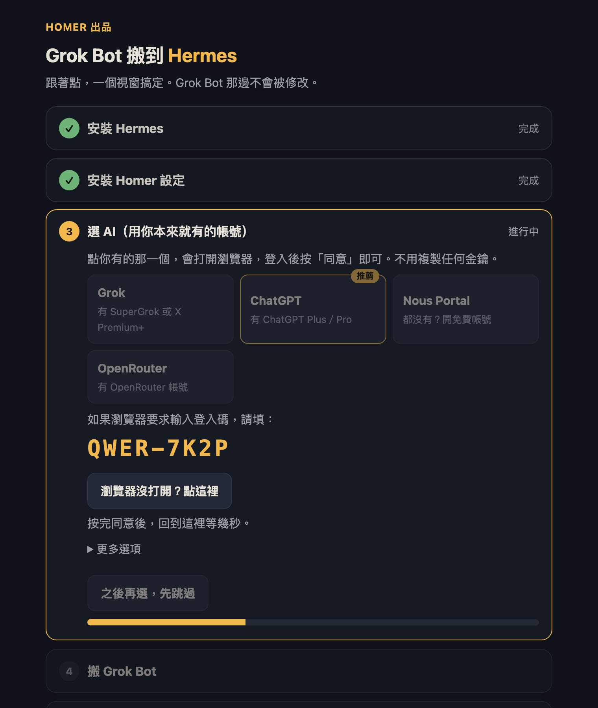
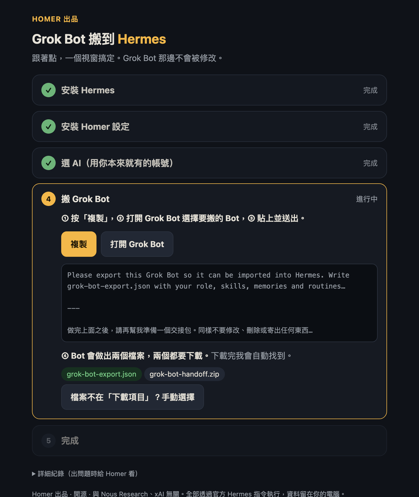
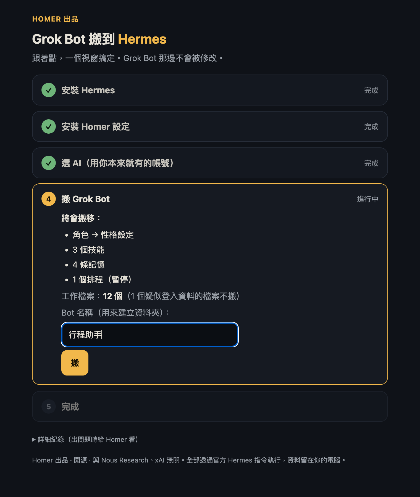
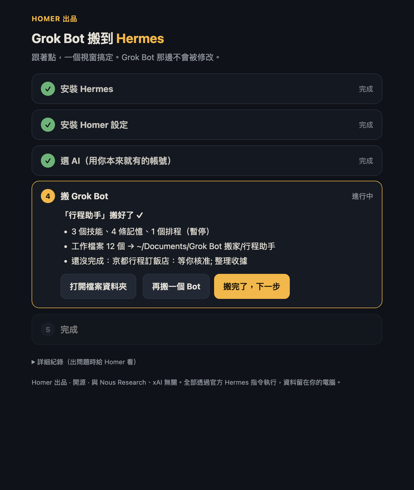

Hermes 指南｜Homer 實測
Grok Bot 搬到 Hermes
懶人包
Grok Bot 額度又用完、等重置等到很煩？這篇從零開始，帶你裝好 Hermes、用你本來就有的帳號登入 AI，再連工作檔案一起把 Bot 搬過來。全程不用打指令，大約 15 分鐘。
先認識它
Hermes 是什麼？
Hermes 是 Nous Research 推出的開源 AI 助理。跟 Grok Bot 一樣會記事、會排程、會用技能；最大的差別是它在你自己的電腦上執行，要用哪家的 AI 模型由你決定。
2026 年 11 月 2 日，Hermes 0.22.6 加入官方 Grok Bot 搬家功能，但要開終端機打指令。Homer 搬家程式把整件事變成一個視窗：點幾下，裝好、登入、搬完。
比一比
Grok Bot 和 Hermes 差在哪？
| Grok Bot | Hermes＋Homer | |
|---|---|---|
| 費用 | 需要 SuperGrok、Cursor Pro 等訂閱 | 軟體免費；AI 用你現有的訂閱，或免費方案 |
| 額度 | 每週一份額度，用完要等重置 | 看你選的 AI；可以換更便宜的模型 |
| 在哪執行 | 雲端，每個 Bot 有自己的電腦，24 小時 | 你的電腦，關機就停 |
| 選模型 | 不行 | 可以，一句話就換 |
| 適合 | 需要 24 小時自動做事、不想管設定 | 想省錢、想自己作主、資料想留在自己手上 |
老實說：如果你需要 Bot 在你睡覺、關機時繼續工作，Grok Bot 的雲端電腦是真正的優勢。兩個可以一起用：重度工作交給 Hermes，需要 24 小時跑的留在 Grok Bot。
01 安裝＋搬家
下載 Homer 搬家程式，一個視窗搞定
不用開終端機，也不用自己找檔案匯入。打開程式、跟著視窗點，它會幫你安裝 Hermes、裝好中文設定、用你現有的帳號選好 AI，再把 Grok Bot 搬過來。
- 一台 Mac（Apple 晶片，也就是 M1 以後；macOS 12 以上）
- 一個 AI 帳號：Grok、ChatGPT Plus、OpenRouter 其中之一；都沒有的話可以用 Nous Portal 免費方案
- 要搬家才需要：你的 Grok Bot，並且在同一台電腦登入
Windows 版製作中，訂閱電子報會第一時間通知你。
打開程式
下載後會在「下載項目」裡，點兩下 zip 解壓縮。第一次開啟時，在「Homer 搬家」上按右鍵 →「打開」→ 再按一次「打開」。
Mac 會顯示「無法驗證開發者」，是因為程式還沒購買 Apple 開發者簽章，不是有問題。原始碼在 GitHub 公開，任何人都能檢查。
安裝 Hermes（還沒裝才需要）
按「安裝 Hermes」，程式會下載 Nous Research 的官方安裝程式，跟著點就好，大約 5–10 分鐘。最後看到「HERMES IS READY」時先不要按 Launch Hermes，關掉它回到程式，程式會自動繼續，並裝好 Homer 中文設定。

選 AI：用你本來就有的帳號
點你有的那一個：Grok（SuperGrok／X Premium+）、ChatGPT（Plus／Pro）、OpenRouter；都沒有就選 Nous Portal 開免費帳號。「更多選項」裡還有 MiniMax（免費但限制較多）和「我有 API 金鑰」（DeepSeek、Gemini、OpenAI 等，貼一次就好）。瀏覽器會自動開啟，程式會顯示登入碼，你按「同意」即可，不用複製任何金鑰。程式會依你電腦上用過的服務標示「推薦」。

搬 Grok Bot（連工作檔案）
按「開始搬」→「複製」→「打開 Grok Bot」，選你要搬的 Bot，貼上並送出。Bot 會做出兩個檔案，兩個都下載，程式會自己找到。
接著程式會列出要搬的內容，你按「搬」：設定、技能、記憶、排程、工作檔案和交接一次搬完，還會告訴你哪些事還沒做完。要搬第二個 Bot，按「再搬一個 Bot」。


打開 Hermes，開始使用

按「打開 Hermes」，左邊「機器人」會多一個「Homer」。開新對話打「你好」，開工精靈會問你 3 個問題（做什麼工作、希望它每天主動做什麼、結果要在哪裡看），然後幫你設好排程，每項先試跑一次給你看。
它也會問你要不要開 Homer 醫生：每週日自動檢查設定、排程、記憶和 token 用量，有問題用白話告訴你，修之前一定先問你。
02 搬家細節
搬得過去的東西
| Grok Bot | 到 Hermes 變成 |
|---|---|
| Bot 的角色 | 小助手的個性設定 |
| 技能 | 技能（Skills） |
| 記得關於你的事 | 記憶（Memory） |
| 定時排程 | 排程工作，預設暫停 |
| Slack／GitHub／email 觸發的排程 | 一份筆記，需要自己重建 |
| 工作檔案（報告、表格、草稿） | 「文件／Grok Bot 搬家／Bot 名稱」資料夾 |
| 聊過的事、還沒完成的工作 | 一份交接，小助手記得去哪裡看 |
- 排程搬過來是暫停狀態，避免兩邊重複執行。先在 Grok Bot 關掉，再跟小助手說「開啟 XX 排程」。
- 對話是 Bot 整理的重點，不是逐句原文；原本的對話仍留在 Grok Bot。
- 在 Grok Bot 貼上訊息需要 Bot 回覆，會用掉一點 Grok Bot 額度。完全用完的話要等重置。
- 各網站和 App 的登入不會搬過去，需要在 Hermes 重新登入。
不用程式，自己手動搬？（會用 Hermes Desktop 的人）
1. 安裝 Hermes Desktop，下載 homer.tar.gz，按 ⌘K／Ctrl+K →「Import profile…」選擇檔案。
2. 開新對話打「幫我從 Grok Bot 搬過來」，小助手會帶你做。
3. 要連工作檔案一起搬，在 Grok Bot 再貼上這段（小助手也會給你）：
請幫我準備一個交接包，我要搬到另一個 AI 助理。不要修改、刪除或寄出任何東西，也不要開始任何新工作。 1. 寫一份 HANDOFF.md，用我平常跟你聊天的語言，內容包括： - 你的角色（一句話） - 我們討論過的主要事項：每項寫日期（如果知道）和決定了什麼 - 還沒完成的工作：每項寫進度、下一步、正在等我核准的事 - 你定期在做的事，以及會用到哪些檔案 - 你知道的我的偏好和習慣 - 檔案清單：每個檔案用一句話說明用途 不要寫任何密碼、API key、token、銀行或信用卡號碼。 2. 把 HANDOFF.md 和你幫我做過或工作會用到的檔案（報告、表格、草稿、腳本、筆記）壓縮成一個 grok-bot-handoff.zip。 - 不要包含：密碼、API key、token、cookie、.env、瀏覽器登入資料、任何登入憑證。 - 單一檔案超過 20MB 就不要放，改在 HANDOFF.md 列出。 - 整個 zip 盡量小於 100MB。 3. 把 grok-bot-handoff.zip 傳給我下載。如果做不出 zip，就把 HANDOFF.md 全文貼出來。
03 省 token
5 招省 token
- 換話題就開新對話：對話越長，每句都要重讀整段，越來越貴。
- 不要在對話中途換模型：一換，下一句就要用全價重讀整段對話。
- 提早壓縮：Homer 預設用到 40% 就自動壓縮（Hermes 原本是 50%）。
- 雜事用省錢設定：改標題、壓縮這類小工作，Homer 已經調低它們的思考程度。
- 日常聊天換便宜模型：跟小助手說「幫我省 token」，它會先看你過去 7 天用了多少，再教你換。
免費領取
Hermes 開箱 PDF：省 token 設定＋20 段實用 prompt
- 開箱第一天要改的 6 個設定
- 20 段繁體中文 prompt：工作、生活、做圖，複製就能用
- 怎麼查自己每週用了多少 token
之後大約每月一封，分享更新和新技巧。隨時一鍵取消訂閱。
常見問題
常見問題
Mac 顯示「無法打開」或「無法驗證開發者」？
在「Homer 搬家」上按右鍵 →「打開」→ 再按一次「打開」，之後就不會再問。這是因為程式還沒購買 Apple 開發者簽章（每年 US$99），不是病毒。原始碼在 GitHub 公開。
Windows 能用嗎？舊款 Intel Mac 呢？
Windows 版製作中，訂閱電子報會通知你。Intel Mac 無法使用，因為官方 Hermes Desktop 只支援 Apple 晶片（M1 以後）。
沒有 Grok 訂閱可以用嗎？
可以。步驟三選 ChatGPT（有 Plus／Pro 即可）或 OpenRouter；都沒有就選 Nous Portal 開免費帳號（登入時選 Free 方案，聊天時選名稱標示免費的模型）。做圖需要另外設定。
登入 Grok 後出現 HTTP 403？
這是 xAI 對部分訂閱方案的限制，不是你操作錯誤。可以改用 xAI API 金鑰（在 console.x.ai 申請），在程式的「更多選項」貼上。
關掉電腦後，排程還會跑嗎？
不會。Hermes Desktop 在你的電腦上執行，電腦要開著才會跑。需要 24 小時執行的工作，可以留在 Grok Bot。
為什麼沒有 Claude、Qwen 登入？
Claude：Anthropic 的條款不允許在其他程式使用 Claude 訂閱帳號登入，用了可能要額外付費，甚至被停權。Qwen：免費登入已在 2026 年 4 月停止。如果你有 Claude 或其他 AI 的 API 金鑰，可以在「更多選項」貼上。
想連逐句原文對話都搬？
社群有人做了 gbot migrate（作者 sam_lung2077，GitHub：akari-sora/grok-bot-cli），可以連原文和所有檔案一起搬，而且不用 Grok Bot 額度。需要終端機和 Node.js，是非官方工具，會讀取 Grok Bot App 的登入資料。熟悉終端機、想搬得最完整的人可以考慮。
我的資料會傳給 Homer 嗎？
不會。Homer 只有設定和技能，原始碼在 GitHub 公開。你的對話只會在你的電腦和你選的 AI 服務之間傳送。API 金鑰也只存在你自己的電腦。
怎麼更新？
有新版會用電子報通知，重新打開新版程式就會自動更新技能，不會影響你的對話、記憶和 AI 設定。